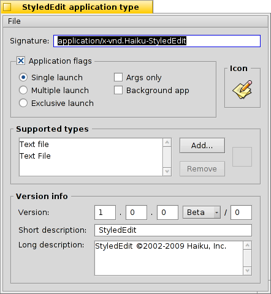

Português (Brazil)
Português (Brazil) Català
Català Deutsch
Deutsch English
English Español
Español Français
Français Italiano
Italiano Magyar
Magyar Polski
Polski Português
Português Română
Română Slovenčina
Slovenčina Suomi
Suomi Svenska
Svenska 中文 ［中文］
中文 ［中文］ Русский
Русский Українська
Українська 日本語
日本語Tipos de Arquivos
Diferentemente do Windows, o Haiku não conta com a extensão de arquivos de 3 letras para o tipo de arquivo (por exemplo, .txt, .jpg, .mp3). Este método é apenas um último recurso. O Haiku usa tipos MIME exatamente como é costume na internet.
 Definindo o tipo de arquivo de um arquivo específico
Definindo o tipo de arquivo de um arquivo específico
Pode-se mudar o tipo de um arquivo específico, seu ícone e o aplicativo associado. Selecione o arquivo e chame através do clique com o botão direito do mouse, , a partir do menu de contexto.

O Tipo de Arquivo
Acima temos um arquivo PNG, é uma sequência MIME image/png. Digamos que você definitivamente sabe que não é um PNG mas um GIF. Pode-se mudar isso também entrando com a sequência MIME correta à mão ou com um dos dois botões abaixo da caixa de texto:
| exibe uma lista hierárquica de tipos de arquivo onde pode navegar para image | GIF Image. | ||
| abre uma caixa de diálogo onde pode-se escolher qualquer arquivo que já tenha o tipo de arquivo que esteja procurando. |
O Aplicativo Preferido
Este menu pop-up exibe uma lista de todos os aplicativos que podem manipular este tipo de arquivo em particular. A partir daqui pode-se escolher qual programa deveria abrir este arquivo específico quando é executado o duplo clique sobre ele. Pode-se, por exemplo, mudar o aplicativo preferido de arquivo HTML do navegador para um editor de texto enquanto se está trabalhando nele. Todos os outros arquivos HTML ainda abrem no navegador, apenas este em particular inicia em seu editor de texto.
O é aquele que é definido globalmente para aquele tipo de arquivo. Se não encontrar o programa que deseja associar com este arquivo no menu pop-up, poderá novamente encontrar os botões e que fazem a mesma coisa descrita em "O Tipo de Arquivo" acima.
O Ícone
Se está imaginando o porquê da fonte de ícone na primeira imagem estar vazia: Ícones são normalmente herdados do sistema padrão para aquele tipo de arquivo. Pode-se abrir o Adicional de tipo de arquivo de um arquivo que contenha um ícone e arrastar e soltá-lo dentro da sua fonte de ícone de arquivo. Ou dê um clique duplo na fonte de ícone e crie ou edite seu próprio ícone. Para mais informações sobre ícones e como criar o seu próprio, veja o tópico Icon-O-Mático.
Definições especiais para aplicativos
Se chamar o Adicional de tipo de arquivo em um executável (aqui: StyledEdit), obterá um diálogo diferente:
No topo verá, ao invés de uma sequência MIME padronizada, a assinatura única da aplicação. Com ela, o sistema encontra o programa onde quer que esteja instalado.
Abaixo dele estão vários flags, controlando o comportamento do aplicativo:
| Apenas uma instância do aplicativo pode ser executado por arquivo executável. Se possuir duas cópias daquele aplicativo, entretanto, eles poderão executar lado a lado. | ||
| Muitas instâncias do aplicativo podem executar simultaneamente. | ||
| Verdadeiramente a apenas uma instância com aquela assintaura de aplicativo é permitido executar por vez. | ||
| Indica ao aplicativo não responder a mensagens. | ||
| O aplicativo não irá aparecer no Twitcher ou na lista de aplicativos em execução da Deskbar. |
Então surge a lista de tipos de arquivos suportados. Pode-se adicionar (e remover) tipos de arquivos se considerar que o aplicativo pode manuseá-los. Como consequencia, o aplicativo aparecerá no menu de aplicativos preferidos ou no menu de contexto do Rastreador quando clicar com o botão direito do mouse em um arquivo daquele tipo.
Na base está a informação de versão e direitos autorais. Como a assinatura de aplicativo, eles são preenchidos pelo autor do aplicativo e não deverão ser alterados.
Definições globais com as Preferências de Tipos de Arquivos
As preferências dos Tipos de Arquivos não lidam com arquivos individuais mas com definições globais de tipos de arquivos. Pode-se mudar ícones padrão e aplicativos preferidos ou adicionar, remover ou alterar atributos de tipos de arquivos inteiros. Pode-se ainda criar seu próprio tipo de arquivo do zero.
Todos os tipos de arquivos e suas configurações estão armazenadas em /boot/home/config/settings/beos_mime/. Antes de começar a experimentar, seria prudente fazer um backup daquela pasta...
Para aprender mais sobre as preferências dos Tipos de Arquivos veja a oficina: Tipos de arquivos, Atributos, Indexação e Consultas.